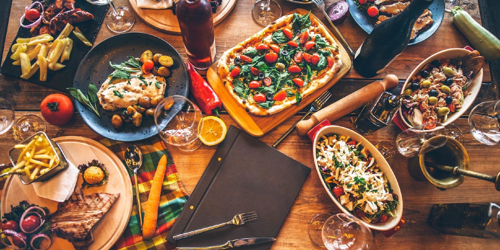

La gastronomia italiana es famosa en todo el mundo por su simplicidad y uso de ingredientes frescos y de alta calidad. Cada region de Italia tiene su propia variedad de platos y especialidades, desde las pastas y pizzas del sur hasta los risottos y carnes del norte. La dieta mediterranea, de la que Italia es un importante exponente, ha sido reconocida por sus beneficios para la salud y es un pilar de la cultura alimentaria italiana.
Entre los platos mas conocidos se encuentran la pizza napolitana, famosa por su masa delgada y crujiente, y la pasta, que tiene infinitas variedades, como los espaguetis, las lasañas y los raviolis. Ademas de estos platos principales, Italia tambien es conocida por su embutido, como el prosciutto y la mortadela, asi como por sus quesos, entre los que destacan el parmigiano reggiano y el gorgonzola.
El vino es otra parte fundamental de la cultura gastronomica italiana. Regiones como la Toscana y el Piamonte producen algunos de los vinos mas apreciados del mundo, como el Chianti y el Barolo. Italia es uno de los mayores productores de vino a nivel mundial, y la cultura del vino esta profundamente entrelazada con la vida cotidiana, con numerosas festividades y eventos que celebran esta bebida ancestral.
En el aspecto dulce, los postres italianos tambien tienen un lugar especial. El tiramisu, el gelato y la panna cotta son algunos de los dulces italianos que han ganado popularidad internacional. A lo largo de los siglos, la cocina italiana ha evolucionado, pero sigue siendo un reflejo de las tradiciones y la historia del pais, manteniendose fiel a la calidad y al sabor.